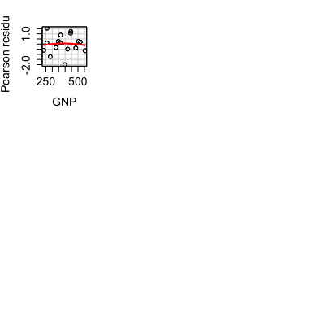
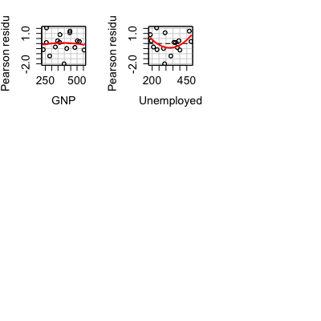
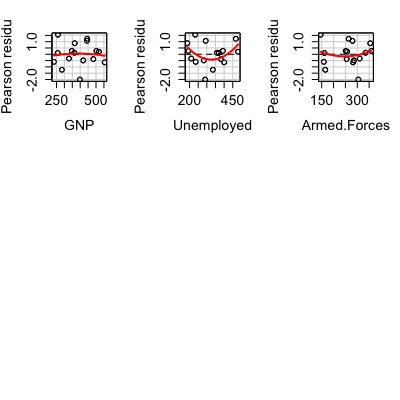
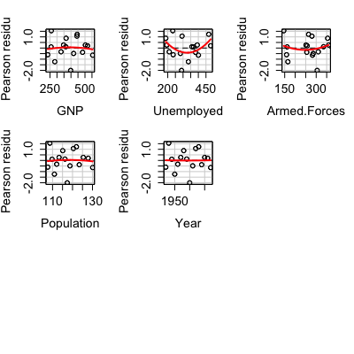
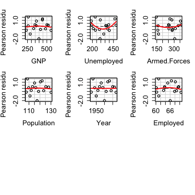
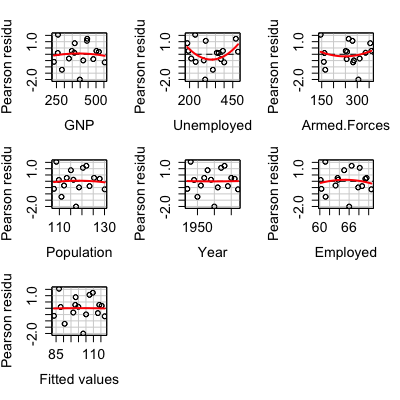

Usage
residualPlots(model, ...) residualPlots(model, terms = ~., layout = NULL, ask, main = "", fitted = TRUE, AsIs = TRUE, plot = TRUE, tests = TRUE, ...) residualPlots(model, ...) residualPlots(model, ...) residualPlot(model, ...) residualPlot(model, variable = "fitted", type = "pearson", plot = TRUE, quadratic = TRUE, smoother = NULL, smoother.args = list(), col.smooth = palette()[3], labels, id.method = "y", id.n = if (id.method[1] == "identify") Inf else 0, id.cex = 1, id.col = palette()[1], col = palette()[1], col.quad = palette()[2], xlab, ylab, lwd = 1, lty = 1, grid = TRUE, ...) residualPlot(model, ...) residualPlot(model, variable = "fitted", type = "pearson", plot = TRUE, quadratic = FALSE, smoother = loessLine, smoother.args = list(k = 3), ...)
Arguments
- model
- A regression object.
- terms
-
A one-sided formula that specifies a subset of the predictors. One
residual plot is drawn for each specified. The default
~ .is to plot against all predictors. For example, the specificationterms = ~ . - X3would plot against all predictors except forX3. To get a plot against fitted values only, use the argumentsterms = ~ 1, fitted=TRUE, Interactions are skipped. For polynomial terms, the plot is against the first-order variable (which may be centered and scaled depending on how thepolyfunction is used). Plots against factors are boxplots. Plots against other matrix terms, like splines, use the result ofpredict(model), type="terms")[, variable])as the horizontal axis; if thepredictmethod doesn't permit this type, then matrix terms are skipped. - layout
-
If set to a value like
c(1, 1)orc(4, 3), the layout of the graph will have this many rows and columns. If not set, the program will select an appropriate layout. If the number of graphs exceed nine, you must select the layout yourself, or you will get a maximum of nine per page. Iflayout=NA, the function does not set the layout and the user can use theparfunction to control the layout, for example to have plots from two models in the same graphics window. - ask
-
If
TRUE, ask the user before drawing the next plot; ifFALSE, don't ask. - main
-
Main title for the graphs. The default is
main=""for no title. - fitted
-
If
TRUE, the default, include the plot against fitted values. - AsIs
-
If
FALSE, terms that use the “as-is” functionIare skipped; ifTRUE, the default, they are included. - plot
-
If
TRUE, draw the plot(s). - tests
-
If
TRUE, display the curvature tests. - ...
-
Additional arguments passed to
residualPlotand then toplot. - variable
-
Quoted variable name for the horizontal axis, or
"fitted"to plot versus fitted values. - type
-
Type of residuals to be used. Pearson residuals are
appropriate for
lmobjects since these are equivalent to ordinary residuals with ols and correctly weighted residuals with wls. Any quoted string that is an appropriate value of thetypeargument toresiduals.lmor"rstudent"or"rstandard"for Studentized or standardized residuals. - quadratic
-
if
TRUE, fits the quadratic regression of the vertical axis on the horizontal axis and displays a lack of fit test. Default isTRUEforlmandFALSE forglm. - smoother
- the name of the smoother to use, selected from the choices
descripbed at
ScatterplotSmoothersForlmobjects the default isNULL. Forglmobject the default isloessLine. - smoother.args
- arguments passed to the smoother.
See
ScatterplotSmoothers. For generalized linear models the number of elements in the spline basis is set tok=3; this is done to allow fitting for predictors with just a few support points. If you have many support points you may wish to setkto a higher number, ork=-1for the default used bygam. - col.smooth
- color for the smoother
- id.method,labels,id.n,id.cex,id.col
- Arguments for the labelling of
points. The default is
id.n=0for labeling no points. SeeshowLabelsfor details of these arguments. - col
- default color for points
- col.quad
- default color for quadratic fit
- xlab
- X-axis label. If not specified, a useful label is constructed by the function.
- ylab
- Y-axis label. If not specified, a useful label is constructed by the function.
- lwd
- line width for lines.
- lty
- line type for quadratic.
- grid
- If TRUE, the default, a light-gray background grid is put on the graph
Description
Plots the residuals versus each term in a mean function and versus fitted values. Also computes a curvature test for each of the plots by adding a quadratic term and testing the quadratic to be zero. This is Tukey's test for nonadditivity when plotting against fitted values.
Details
residualPlots draws one or more residuals plots depending on the
value of the terms and fitted arguments. If terms = ~ .,
the default, then a plot is produced of residuals versus each first-order
term in the formula used to create the model. Interaction terms, spline terms,
and polynomial terms of more than one predictor are
skipped. In addition terms that use the “as-is” function, e.g., I(X^2),
will also be skipped unless you set the argument AsIs=TRUE. A plot of
residuals versus fitted values is also included unless fitted=FALSE.
In addition to plots, a table of curvature tests is displayed. For plots
against a term in the model formula, say X1, the test displayed is
the t-test for for I(X^2) in the fit of update, model, ~. + I(X^2)).
Econometricians call this a specification test. For factors, the displayed
plot is a boxplot, and no curvature test is computed.
For fitted values, the test is Tukey's one-degree-of-freedom test for
nonadditivity. You can suppress the tests with the argument tests=FALSE.
residualPlot, which is called by residualPlots,
should be viewed as an internal function, and is included here to display its
arguments, which can be used with residualPlots as well. The
residualPlot function returns the curvature test as an invisible result.
residCurvTest computes the curvature test only. For any factors a
boxplot will be drawn. For any polynomials, plots are against the linear term.
Other non-standard predictors like B-splines are skipped.
Value
For lm objects,
returns a data.frame with one row for each plot drawn, one column for
the curvature test statistic, and a second column for the corresponding
p-value. This function is used primarily for its side effect of drawing
residual plots.
References
Fox, J. and Weisberg, S. (2011) An R Companion to Applied Regression, Second Edition. Sage.
Weisberg, S. (2005) Applied Linear Regression, Third Edition, Wiley, Chapter 8
Residual Plots and Curvature Tests for Linear Model Fits
Residual Plots and Curvature Tests for Linear Model Fits
Examples






Test stat Pr(>|t|) GNP -0.895 0.397 Unemployed 1.893 0.095 Armed.Forces 1.722 0.123 Population -1.108 0.300 Year 0.124 0.904 Employed -0.793 0.451 Tukey test -0.093 0.926